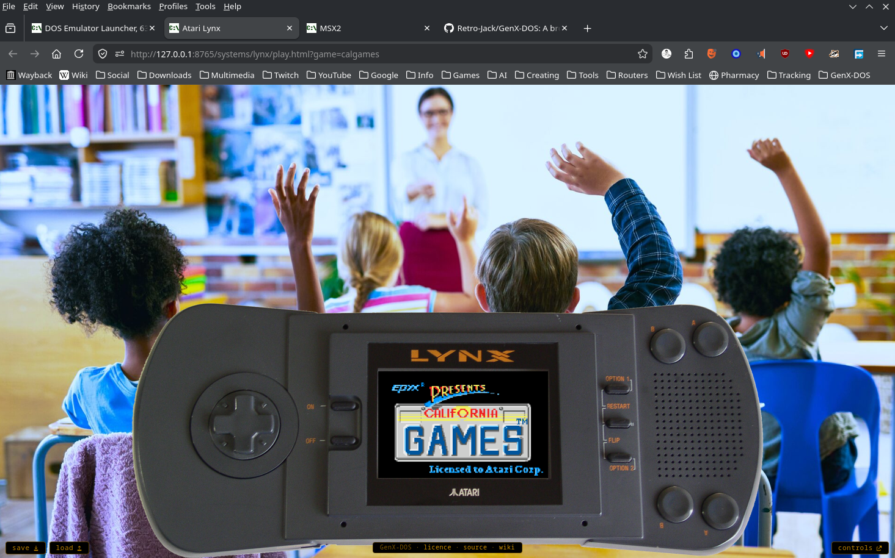

There's a particular sound a 486 made when you turned it on. You can't
hear it here — this is a browser tab — but everything else is in
place. An AMIBIOS logo flashes. Memory counts up in 64 KB
increments. A configuration table rattles off a numeric coprocessor
that's politely Absent. Then the screen clears to a black
field and a box-drawn menu draws itself — Home Computers, Games
Consoles, Handheld Consoles — in the chunky lettering of a real DOS
screen, a grey C:\SYSTEMS> blinking beneath it,
waiting for you the way machines used to: by doing nothing at all
until you type something.

C:\SYSTEMS> waiting below — and yes, that is a
browser tab
Type a number and a Commodore 64 boots inside a curved CRT bezel, the burnt-orange wallpaper of a 1977 living room visible around the glass. Forty-year-old games run. Nothing was installed. Nothing phoned home.
This is GenX-DOS, and the trick it pulls off is harder than it looks.
The lie that makes it work
The conceit is simple: a DOS prompt as a launcher. But nothing on that
screen is quite what it pretends to be. The C:\> isn't
a real DOS machine — it's a very careful drawing of one. Every letter
is a tiny picture of a letter, copied from the same chunky character
set a real VGA screen used, so the text has the blocky bite of the
real thing rather than the smooth lettering of a modern web page. The
directories you cd into are part of the performance too,
and every "program" you can run is really a door: it either prints a
menu, or switches on one of the machines.
The machines are the honest part. Behind each number sits an emulator — a working replica of the original computer, faithful enough that the games can't tell the difference. And the project is scrupulous about credit: the prompt itself began life as a feature built for the LGR (Lazy Game Reviews) YouTube channel's website, and GenX-DOS is everything raised on top of it — the boot screen, the menus, the thirty-three machines, and several hundred pages of per-game instructions. A ledger in the files records where every borrowed piece came from, down to the photographer whose picture of an Amstrad monitor frames one of the screens.
One rule that shapes everything
The defining rule is almost monastic: everything lives in one place, and nothing is fetched from anywhere else. When you open GenX-DOS, the whole museum arrives together — every machine, every game, every page of instructions. It installs nothing. It downloads nothing while you play. It never phones home.
This sounds limiting. It's actually the smartest decision in the project. A museum of old software can't afford to lean on some other website that might be gone next year — the moment it depends on anyone else, it starts to rot the same way the things it's preserving did.
It also makes the thing pleasantly heavy: about 138 MB all told — call it a hundred floppy disks' worth. You could copy the lot onto a single CD, hand it to a friend, and it would still boot in a decade.
Where the week-long fights happened
Thirty-three machines, from the Apple I to the Sega Game Gear, and no two of them arrived the same way. Some came browser-ready. Others fought: five machines had no browser version at all, so their emulators were rebuilt by hand until they ran in one. Every one of those fights is written up, machine by machine, on the project wiki — the war stories are half the documentation.
Some of the stubbornness you'd never see until you met it. The ZX81's 3D Monster Maze opens with menus telling you to press STOP and CONT — keywords printed on a 1981 keyboard you don't have. So the game's own tape was altered, byte by byte, until its menus name keys that exist. And a faint shimmer across the DOS prompt — once a stubborn display glitch — was tamed until what remained looked like the scanlines of an old monitor.
A point of view about the past
What elevates GenX-DOS above "a pile of emulators" is that it has opinions. The scope isn't "8-bit era" — it's 8-bit feel. The aesthetic decides, not the calendar: the Game Boy, Game Gear and Lynx are in, late-90s release dates be damned; the Genesis and Amiga are out. Ten games per system, sorted by year. When a franchise qualifies, the first entry gets the nod.

Every game carries its own instruction page — real keys, checked against the original manuals and inlays, not guessed — and most machines will take a USB gamepad if the game suits one. Where the original wanted a joystick, the pad drives the machine's own joystick port, just as it would have in 1985.
Insert disk and press any key
But here's the thing about standing in front of it. You type
0 to exit, and the screen clears to a small sign-off and
drops you back to a live prompt, cursor blinking, waiting again — and
it answers to real DOS. dir the drive,
cd into its folders, type a file,
find a game; the menus are only the paved road through a
C: drive that's there to be played with. For a second the whole
illusion holds completely: it's 1991, the machine is yours, and
there's a whole shoe box of games one number away.
It's a museum that boots in a tab. And unlike most museums, you're allowed to touch everything.